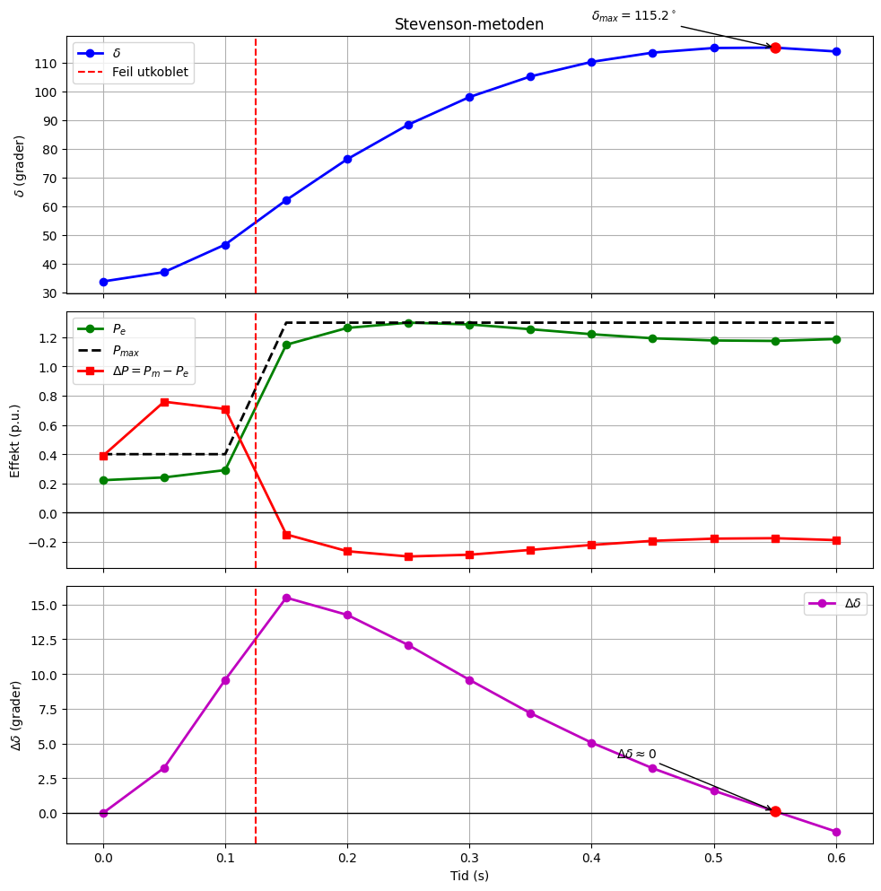
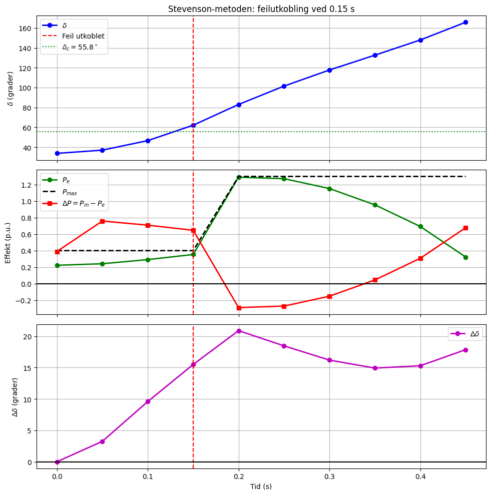

Stevenson-metoden (utvidet tabell)#
Gitt
\( \Delta t = 0.05\,\text{s} \)
og
\( \frac{(\Delta t)^2}{M}=8.33 \)
Mekanisk effekt
\( P_m=1.0\ \text{p.u.} \)
Startvinkel
\( \delta_0=\sin^{-1}\!\left(\frac{1}{1.8}\right)=33.8^\circ \)
Før feilen:
\( \Delta P=0 \)
Umiddelbart etter feilen:
\( P_e=0.4\sin\delta \)
\( \Delta P=P_m-P_e =1-0.4\sin\delta \)
Ved start:
$ \Delta P_0#
1-0.4\sin(33.8^\circ)#
0.778 $
Stevenson bruker for første intervall
$ \Delta P=\frac{0+0.778}{2}#
0.389 $
Videre brukes
$ \Delta(\Delta\delta)#
\frac{(\Delta t)^2}{M}\Delta P#
8.33,\Delta P $
og
$ \Delta\delta_n#
\Delta\delta_{n-1} + 8.33,\Delta P_{n-1} $
samt
$ \delta_n#
\delta_{n-1} + \Delta\delta_n $
Fra og med \(t=0.15\,\text{s}\) er feilen koblet ut, og
\( P_e=1.3\sin\delta \)
slik at
$ \Delta P#
1-1.3\sin\delta. $
Tabell#
| \(t\) (s) | \(\delta\) (°) | \(P_{\max}\) | \(P_e\) (p.u.) | \(\Delta P\) (p.u.) | \(8.33\Delta P\) (°) | \(\Delta\delta\) (°) |
(s) |
(°) |
P_max |
P_e (p.u.) |
Delta P (p.u.) |
8.33\Delta P (°) |
\Delta\delta (°) |
|---|---|---|---|---|---|---|
0.00 |
33.80 |
0.4 |
0.222 |
0.389* |
3.24 |
0.00 |
0.05 |
37.05 |
0.4 |
0.241 |
0.759 |
6.32 |
3.25 |
0.10 |
46.63 |
0.4 |
0.291 |
0.709 |
5.91 |
9.58 |
0.15 |
62.12 |
1.3 |
1.149 |
-0.149 |
-1.24 |
15.49 |
0.20 |
76.37 |
1.3 |
1.264 |
-0.264 |
-2.20 |
14.25 |
0.25 |
88.39 |
1.3 |
1.300 |
-0.300 |
-2.50 |
12.08 |
0.30 |
97.98 |
1.3 |
1.288 |
-0.288 |
-2.40 |
9.58 |
0.35 |
105.16 |
1.3 |
1.255 |
-0.255 |
-2.12 |
7.18 |
0.40 |
110.22 |
1.3 |
1.221 |
-0.221 |
-1.84 |
5.06 |
0.45 |
113.44 |
1.3 |
1.193 |
-0.193 |
-1.61 |
3.22 |
0.50 |
115.05 |
1.3 |
1.178 |
-0.178 |
-1.48 |
1.61 |
0.55 |
115.18 |
1.3 |
1.175 |
-0.175 |
-1.46 |
0.13 |
0.60 |
113.85 |
1.3 |
1.188 |
-0.188 |
-1.57 |
-1.33 |
* Første verdi beregnes som
$ \Delta P#
\frac{0+0.778}{2}#
0.389. $
Eksempel på beregning av ett steg#
Ved \(t=0.20\,\text{s}\):
$ P_e#
1.3\sin(76.37^\circ)#
1.264 $
$ \Delta P#
1-1.264#
-0.264 $
$ 8.33\Delta P#
8.33(-0.264)#
-2.20^\circ $
$ \Delta\delta#
14.25-2.20#
12.05^\circ \approx 12.08^\circ $
$ \delta_{0.25}#
76.37^\circ+12.08^\circ#
88.39^\circ $
Første svingtopp#
Mellom \(t=0.55\,\text{s}\) og \(t=0.60\,\text{s}\) skifter
\( \Delta\delta \)
fortegn:
\( \Delta\delta_{0.55}=0.13^\circ \)
\( \Delta\delta_{0.60}=-1.33^\circ \)
Dette tilsvarer
\( \frac{d\delta}{dt}=0 \)
i den kontinuerlige swingligningen.
Dermed fås omtrent
\( \delta_{\max}\approx115^\circ \)
ved første sving.
import numpy as np
import matplotlib.pyplot as plt
# -----------------------------
# Stevenson-eksempel
# -----------------------------
# Tidspunkter
t = np.array([
0.00, 0.05, 0.10, 0.15, 0.20, 0.25,
0.30, 0.35, 0.40, 0.45, 0.50, 0.55, 0.60
])
# Rotorvinkel δ (grader)
delta = np.array([
33.80, 37.05, 46.63, 62.12, 76.37, 88.39,
97.98, 105.16, 110.22, 113.44, 115.05, 115.18, 113.85
])
# Pmax
Pmax = np.array([
0.4, 0.4, 0.4,
1.3, 1.3, 1.3, 1.3, 1.3,
1.3, 1.3, 1.3, 1.3, 1.3
])
# Elektrisk effekt
Pe = np.array([
0.222, 0.241, 0.291,
1.149, 1.264, 1.300,
1.288, 1.255, 1.221,
1.193, 1.178, 1.175, 1.188
])
# Accelerating power
DeltaP = np.array([
0.389, 0.759, 0.709,
-0.149, -0.264, -0.300,
-0.288, -0.255, -0.221,
-0.193, -0.178, -0.175, -0.188
])
# Stevenson-kolonnen Δδ
delta_step = np.array([
0.00,
3.25,
9.58,
15.49,
14.25,
12.08,
9.58,
7.18,
5.06,
3.22,
1.61,
0.13,
-1.33
])
# Feilutkobling
t_clear = 0.125
# -----------------------------
# Plot
# -----------------------------
fig, ax = plt.subplots(3, 1, figsize=(10, 10), sharex=True)
# === Rotorvinkel ===
ax[0].plot(
t, delta,
color='blue',
marker='o',
linewidth=2,
label=r'$\delta$'
)
ax[0].axvline(
t_clear,
color='red',
linestyle='--',
label='Feil utkoblet'
)
imax = np.argmax(delta)
ax[0].plot(
t[imax],
delta[imax],
'ro',
markersize=8
)
ax[0].annotate(
rf'$\delta_{{max}}={delta[imax]:.1f}^\circ$',
xy=(t[imax], delta[imax]),
xytext=(0.40, 125),
arrowprops=dict(arrowstyle='->')
)
ax[0].set_ylabel(r'$\delta$ (grader)')
ax[0].set_title('Stevenson-metoden')
ax[0].grid(True)
ax[0].legend()
# === Effekter ===
ax[1].plot(
t, Pe,
'go-',
linewidth=2,
label=r'$P_e$'
)
ax[1].plot(
t, Pmax,
'k--',
linewidth=2,
label=r'$P_{max}$'
)
ax[1].plot(
t, DeltaP,
'rs-',
linewidth=2,
label=r'$\Delta P=P_m-P_e$'
)
ax[1].axvline(
t_clear,
color='red',
linestyle='--'
)
ax[1].axhline(
0,
color='black',
linewidth=1
)
ax[1].set_ylabel('Effekt (p.u.)')
ax[1].grid(True)
ax[1].legend()
# === Stevenson Δδ ===
ax[2].plot(
t,
delta_step,
'mo-',
linewidth=2,
label=r'$\Delta\delta$'
)
ax[2].axvline(
t_clear,
color='red',
linestyle='--'
)
ax[2].axhline(
0,
color='black',
linewidth=1
)
# Marker når Δδ passerer null
ax[2].plot(
t[11],
delta_step[11],
'ro',
markersize=8
)
ax[2].annotate(
r'$\Delta\delta \approx 0$',
xy=(t[11], delta_step[11]),
xytext=(0.42, 4),
arrowprops=dict(arrowstyle='->')
)
ax[2].set_xlabel('Tid (s)')
ax[2].set_ylabel(r'$\Delta\delta$ (grader)')
ax[2].grid(True)
ax[2].legend()
plt.tight_layout()
plt.show()

Stevenson-metoden med feilutkobling ved \(t=0.15\,\text{s}\)#
Gitt
\( P_m = 1.0 \)
Før feilen:
\( P_e = 1.8\sin\delta \)
Under feilen:
\( P_e = 0.4\sin\delta \)
Etter feilutkobling:
\( P_e = 1.3\sin\delta \)
Videre
\( \Delta t = 0.05\,\text{s} \)
og
\( \frac{(\Delta t)^2}{M}=8.33 \)
Startvinkelen er
$ \delta_0#
\sin^{-1}!\left(\frac{1}{1.8}\right)#
33.8^\circ. $
Stevensons rekursjonsformler er
$ \Delta(\Delta\delta)#
8.33,\Delta P $
$
\Delta\delta_n#
\Delta\delta_{n-1} + 8.33,\Delta P_{n-1} $
$
\delta_n#
\delta_{n-1} + \Delta\delta_n. $
Feilen kobles ut ved
\( t=0.15\,\text{s}. \)
Resultattabell#
\(t\) (s) |
\(\delta\) (°) |
\(P_{\max}\) |
\(P_e\) |
\(\Delta P=P_m-P_e\) |
\(8.33\Delta P\) |
\(\Delta\delta\) (°) |
|---|---|---|---|---|---|---|
0.00 |
33.80 |
0.4 |
0.222 |
0.389 |
3.24 |
0.00 |
0.05 |
37.05 |
0.4 |
0.241 |
0.759 |
6.32 |
3.25 |
0.10 |
46.63 |
0.4 |
0.291 |
0.709 |
5.91 |
9.58 |
0.15 |
62.12 |
0.4 |
0.353 |
0.647 |
5.39 |
15.49 |
0.20 |
83.00 |
1.3 |
1.291 |
-0.291 |
-2.42 |
20.88 |
0.25 |
101.47 |
1.3 |
1.273 |
-0.273 |
-2.27 |
18.46 |
0.30 |
117.66 |
1.3 |
1.153 |
-0.153 |
-1.27 |
16.19 |
0.35 |
132.58 |
1.3 |
0.956 |
0.044 |
0.37 |
14.92 |
0.40 |
147.87 |
1.3 |
0.693 |
0.307 |
2.56 |
15.29 |
0.45 |
165.72 |
1.3 |
0.322 |
0.678 |
5.65 |
17.85 |
Vurdering#
Den kritiske vinkelen fra likearealkriteriet var
\( \delta_c \approx 55.8^\circ. \)
Ved feilutkoblingstidspunktet har vi
\( \delta = 62.12^\circ, \)
som gir
\( \delta > \delta_c. \)
Systemet er derfor ustabilt.
Rotorvinkelen passerer den post-fault ustabile likevekten
$ \delta_u#
180^\circ-\sin^{-1}!\left(\frac{1}{1.3}\right)#
129.72^\circ, $
og fortsetter mot tap av synkronisme.
import numpy as np
import matplotlib.pyplot as plt
# Data for feilutkobling ved 0.15 s
t = np.array([
0.00, 0.05, 0.10, 0.15,
0.20, 0.25, 0.30, 0.35,
0.40, 0.45
])
delta = np.array([
33.80, 37.05, 46.63, 62.12,
83.00, 101.47, 117.66, 132.58,
147.87, 165.72
])
Pmax = np.array([
0.4, 0.4, 0.4, 0.4,
1.3, 1.3, 1.3, 1.3, 1.3, 1.3
])
Pe = np.array([
0.222, 0.241, 0.291, 0.353,
1.291, 1.273, 1.153, 0.956,
0.693, 0.322
])
DeltaP = np.array([
0.389, 0.759, 0.709, 0.647,
-0.291,-0.273,-0.153, 0.044,
0.307, 0.678
])
delta_step = np.array([
0.00, 3.25, 9.58, 15.49,
20.88,18.46,16.19,14.92,
15.29,17.85
])
t_clear = 0.15
delta_critical = 55.8
fig, ax = plt.subplots(3, 1, figsize=(10, 10), sharex=True)
# Rotorvinkel
ax[0].plot(t, delta, 'bo-', linewidth=2, label=r'$\delta$')
ax[0].axvline(
t_clear,
color='red',
linestyle='--',
label='Feil utkoblet'
)
ax[0].axhline(
delta_critical,
color='green',
linestyle=':',
label=r'$\delta_c = 55.8^\circ$'
)
ax[0].set_ylabel(r'$\delta$ (grader)')
ax[0].set_title('Stevenson-metoden: feilutkobling ved 0.15 s')
ax[0].grid(True)
ax[0].legend()
# Effekter
ax[1].plot(t, Pe, 'go-', linewidth=2, label=r'$P_e$')
ax[1].plot(t, Pmax, 'k--', linewidth=2, label=r'$P_{max}$')
ax[1].plot(t, DeltaP, 'rs-', linewidth=2,
label=r'$\Delta P=P_m-P_e$')
ax[1].axvline(
t_clear,
color='red',
linestyle='--'
)
ax[1].axhline(0, color='black')
ax[1].set_ylabel('Effekt (p.u.)')
ax[1].grid(True)
ax[1].legend()
# Stevenson Δδ
ax[2].plot(
t,
delta_step,
'mo-',
linewidth=2,
label=r'$\Delta\delta$'
)
ax[2].axvline(
t_clear,
color='red',
linestyle='--'
)
ax[2].axhline(0, color='black')
ax[2].set_xlabel('Tid (s)')
ax[2].set_ylabel(r'$\Delta\delta$ (grader)')
ax[2].grid(True)
ax[2].legend()
plt.tight_layout()
plt.show()
